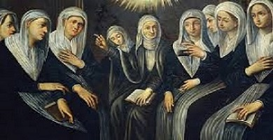

For most girls and women in medieval times, distress, hardship, pain and suffering was the only way of life. Those born into noble families had easier lives than those born as peasants or serfs, but all females were considered inferior to males by nature and by law. Laws were set by Lords and kings, and by the male heads of the Roman Catholic Church – a powerful influence on society in the Middle Ages. Women were thought to obey men, their fathers and husbands.
The primary job opportunity for most women was to have and raise children. Girls were often married by the age of 14, and had their first baby by the age of 15. Dying while giving birth was the most common cause of death in young women. Medical care and knowledge was crude. They were carding, combing, clouding and washing wool. Spinning ship’s wool into thread and yarn was such common woman’s work that the tool used, a spindle or a distaff, became a symbol of a peasant woman.
Women had a better chance of learning a trade by helping their husbands and family business. While they were generally banned from joining the powerful professional union guild or changing as much as men, there were women merchants, druggists, barbers and brewers. Women could only own property if they inherited it from their fathers or husbands, and lost that property if they married or remarried. Property laws were no different for women from the upper classes. Although when their husbands were away on business at the Royal Court or fighting wars, many noble women had the power to manage the family castle and a state called a fief. Women would manage crops and all of the serves who lived in the fiefdom. Noble women also had more access to education and servants, which allowed them to become artists, musicians and writers.
Just like in Ancient Greece, one of the only alternatives for upper class women who did not want to be a wife or a mother came from religion. The Roman Catholic Church, the same organization that restricted women in so many ways, gave them the opportunity to be respected regardless of their gender. Women who became nuns could lead lives of work, prayer and educational study. Nuns could rise to become the leader sometimes even overseeing the male priests. Near the end of the Middle Ages things began to change for women in some of the more developed city-states, such as Florence where women were allowed into universities, but it would be centuries before women in Europe would win the first rights and freedom that we have today.